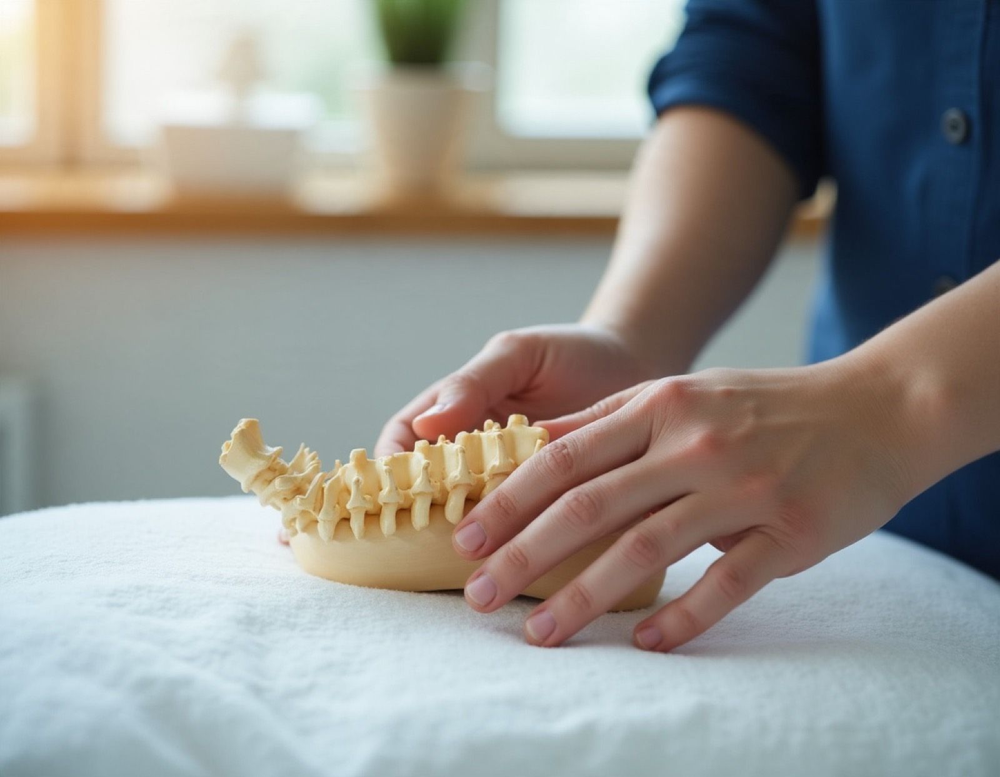
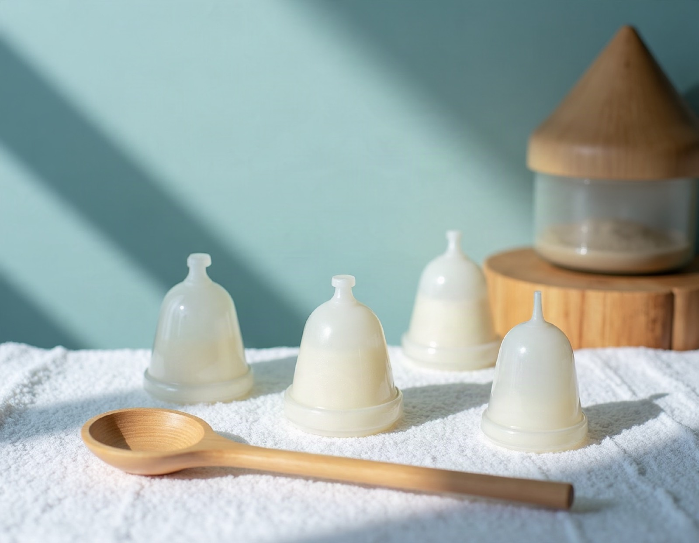

진료과목 · 치료법
개인의 상태에 맞춰 필요한 치료를 안내합니다.
TREATMENT
진료과목
척추 · 관절 질환
목·허리·어깨·무릎·손목 등의 통증과 결림, 자세 불균형에 대해 진찰 후 침, 추나, 약침 등을 상태에 맞게 안내합니다.
목 · 허리 · 어깨 · 무릎 · 턱관절
교통사고 후유증
사고 후 나타나는 목·허리 결림, 두통, 어지러움 등 불편감을 살피고 회복 과정을 함께 관리합니다. 자동차보험 진료 관련 문의는 내원·전화로 안내드립니다.
자동차보험 문의 가능
여성질환
월경 관련 불편, 산전·산후 관리, 갱년기 증상 등 여성 건강 전반에 대해 상담합니다.
월경 · 산전산후 · 갱년기
소화기 · 알레르기 비염
잦은 체함, 소화불량, 환절기 코 증상 등 생활 속 불편을 체질과 생활 습관을 고려해 상담합니다.
소화불량 · 비염 · 피로
METHODS
치료법
추나요법
숙련된 손기술로 척추와 관절의 균형을 살피는 한방 수기요법입니다. 건강보험 적용 여부는 상태에 따라 달라 상담 시 안내드립니다.

침 · 약침
경혈을 자극하여 기혈 순환을 돕는 침 치료와, 한약재 추출액을 이용한 약침 치료를 상태에 맞게 시행합니다.
한약 · 보약
문진과 진찰을 바탕으로 체질과 증상을 고려해 처방합니다. 복용 방법과 주의사항은 충분히 설명드립니다.
부항 · 뜸 · 물리치료
뭉친 근육과 냉증 관리에 도움을 주는 보조 치료로, 필요에 따라 병행합니다.

※ 치료 효과와 경과는 개인에 따라 다를 수 있습니다. [내용은 실제 진료 항목에 맞게 수정해 주세요]